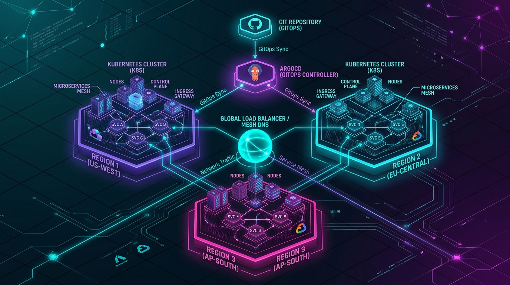
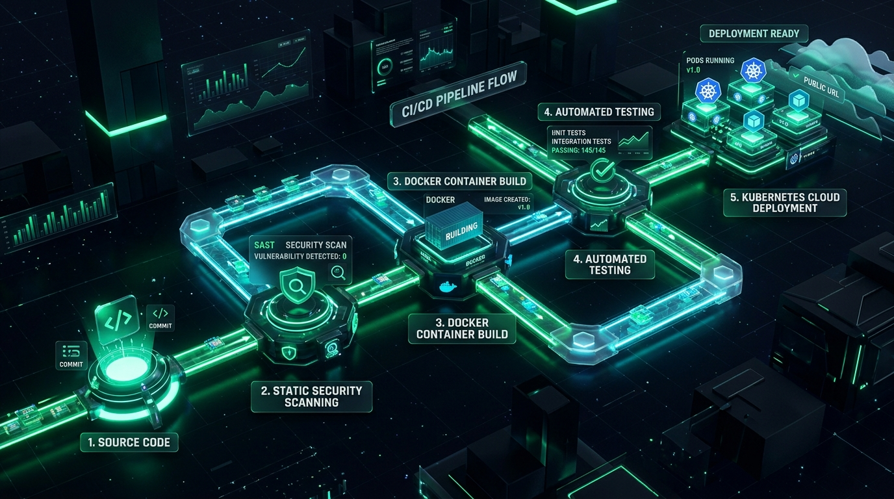
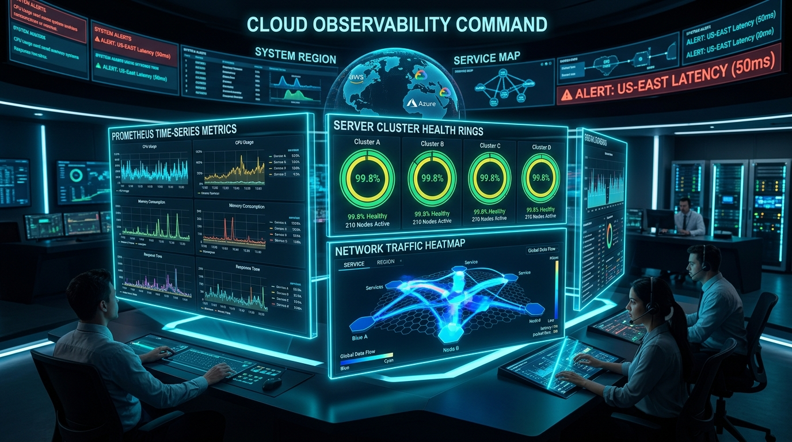

I engineer production-grade Kubernetes platforms, declarative Terraform Infrastructure as Code (IaC), and DevSecOps pipelines. Bridging developer velocity with high-availability cloud stability and automated self-healing.
Experience the zero-downtime automated deployment sequence. Click "Trigger Pipeline Build" to simulate a real production rollout.
Hi, I'm Waqas Ali. Over years of managing high-scale cloud platforms, my mission has always been simple: empower engineering teams to deploy with confidence without ever worrying about downtime, security debt, or infrastructure fragility.
I treat infrastructure as reliable software—declarative, versioned, automated, and observable. Whether orchestrating Kubernetes clusters across multiple clouds or slashing build times by 85%, I architect systems that survive failures seamlessly.
Tools and technologies I use daily to orchestrate, automate, and safeguard production cloud environments.
EKS, AKS, Helm, Kustomize, Istio, Cilium, Karpenter
Terraform Modules, Terragrunt, State Locking, Ansible
EKS, VPC Peering, IAM, RDS Aurora, S3, Route53, KMS
GitHub Actions, GitLab CI, ArgoCD, Jenkins, Blue/Green
Multi-stage builds, Distroless, Docker Compose, BuildKit
Prometheus, Grafana, OpenTelemetry, Loki, Datadog
Trivy, SonarQube, HashiCorp Vault, Falco, CIS Benchmarks
Bash, Python 3, Go, Kernel tuning, Systemd, Networking
Real-world infrastructure architectures designed and deployed to handle millions of requests with resilience.

KubernetesHigh-availability multi-region Kubernetes cluster deployment spanning 3 geographical zones with automated GitOps synchronization via ArgoCD, global Anycast routing, and Cilium eBPF service mesh.

DevSecOpsAutomated end-to-end delivery pipeline integrating static code analysis, vulnerability scanning with Trivy and SonarQube, and zero-downtime Blue/Green traffic switching with instant canary rollbacks.

SREUnified telemetry command center collecting metrics, distributed traces, and log aggregation across 200+ containerized microservices with dynamic auto-remediation alerting rules.
Type commands below or click the quick command chips to interact with my virtual cloud environment.
.---. waqas@devops-cluster
/ \ --------------------
| () () | OS: Alpine Linux Cloud Native v3.19
\ - / Host: AWS EC2 EKS Node Pool (us-east-1)
`---` Kernel: 6.1.72-k8s-ebpf
Uptime: 428 days, 14 hours, 22 mins
Shell: bash 5.2.21
K8s: v1.30.2 (HA Control Plane)
IaC: Terraform v1.8.4
Status: Ready for new Senior DevOps challenges!
Industry-standard certifications validating cloud architecture, Kubernetes administration, and infrastructure automation.
Available for full-time Senior DevOps / Cloud Architect roles, high-impact consulting, or Kubernetes migrations.
Whether you need to overhaul your CI/CD delivery pipeline, architect multi-cloud Kubernetes clusters, or optimize AWS infrastructure costs, let's talk.